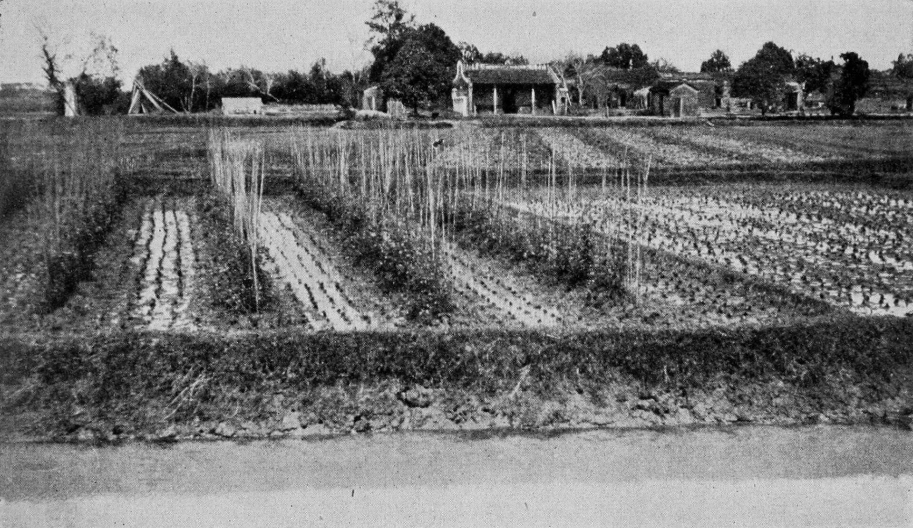

Bodem en kringlooplandbouw
Bodem en kringlooplandbouw
### bodem en kringlooplandbouw
Hier een overzicht van de kringlooplandbouw die meer dan 3000 jaar lang in China, Korea en Japan werd toegepast.
Wij zitten nu in een heel andere situatie maar de houding waaruit gewerkt werd kan voor ons ook heel belangrijk zijn.
In 1909 reisde de Amerikaanse wetenschapper F. J. King een half jaar door China, Korea en Japan. Er was daar een volledig zelfvoorzienende kringlooplandbouw voor 700 miljoen mensen. Hieronder een overzicht van wat hij opschreef over de bodem en de bemesting.
Het boek wat hij schreef is vertaald door Sietz Leeflang en te bestellen bij uitgever Eburon.nl (Vierduizend jaar kringlooplandbouw).
De originele Engelse versie in hier te downloaden (26 mb).
Bodem en bemesting in China, Korea en Japan uit F.H. King: Farmers of Forty Centuries
Bodem en mest in het kort
De door F.H. King beschreven toepassing van mest en compost
Afbeeldingen rond bereiding en toepassing van mest en compost
De zelfvoorzienende landbouw in Oost-Azië voor de komst van kunstmest en fossiele energie
Bodem en mest in het kort
Intensief gebruik van de grond. Gewassen naast- en direct na elkaar.
Veel aandacht voor de individuele plant.
Kennis eeuwenlang doorgegeven.
- Drainage en irrigatie waar nodig.
Diepe losse grond, veel regenwormen.
Centraal stond de aandacht voor compostbereiding.
Bij compostbereiding werd gebruik gemaakt van menselijke en dierlijke mest, bagger uit kanalen, gewasresten, klaverloof, strooisel uit natuurgebieden, kaf van rijst en al het andere dat composteerbaar is.
Gericht inzetten van vloeibare mest.
Men kende niet de begrippen stikstof, fosfaat en kali niet. Wanneer je kijkt naar hoe men werkt lijkt het wel of ze onbewust de begrippen toch wel kenden.
2. De door F.H. King beschreven toepassing van mest en compost
Vertaling: Jan Bokhorst
Afbeeldingen: Wikimedia Commons.
.

Afvoer van menselijke mest in Shamghai in 1909
Gebruik van menselijke mest
De opslag van het menselijk afval gebeurde in China grotendeels in stenen vaten van 500 tot 1000 pond. In Japan gebruikte men vaak met cement gevoerde kuilen. In emmers wordt het materiaal vervolgens naar het veld gedragen. Soms twee emmers aan een juk. Bij het aanbrengen van de vloeistof op het veld of de tuin wordt een speciaal vat gebruikt met een lang handvat.
In China worden dierlijke uitwerpselen op wegen vaak verzameld en zorgvuldig bewaard. In sommige moerbij boomgaarden die we bezochten werden in een ringvormige gleuf van 8 tpt 10 cm diep de mest van zijderupsen en de resten van de rupsen en takjes aangebracht. De kringloop wordt zo goed verzorgd. Alleen de zijde wordt afgevoerd.

Een door ossen aangedreven waterpomp. De uitwerpselen van de de ossen werden zorgvuldig opgevangen voordat ze op de grond vielen.
Mest opvangen van ossen bij de irrigatie van de irrigatiepompen
Op de boerderij van mevrouw Wu, in de buurt van Kashing, konden we de werking van twee irrigatiepompen bestuderen. 10 ha rijstveld moesten geirrigeerd door twee pompen die elk door een os werden aangedreven. Bijzonder was dat er een jongen de leiding over de dieren had en iedere keer met een schep de uitwerpselen van de dieren verzamelde. De schep had een bamboestok van zes meter lang. De uitwerpselen werden opgevangen voordat ze op de grond kwamen. We hadden met de jongen te doen dat hij dit soort werk moest doen. Toch keek hij opgewekt. Hij voerde de taak als een vanzelfsprekendheid uit. Door wat hij deed werd verse mest van hoge kwaliteit verzameld en kon er meer rijst worden geoogst. Hij werd zo vertrouwd met zuinig zijn wat van belang is voor zijn ouders en voor de toekomst.
Weinig vliegen omdat het materiaal van de broedplaatsen van vliegen ook voor compost gebruikt kunnen worden
Het was bijzonder dat we de hele reis heel weinig vliegen zagen. Waarom dat zo was wisten we niet. Op de heenreis zagen we ze volop. De reden van het geringe aantal vliegen is waarschijnlijk dat alle afval direct werd verzameld en dat er hierdoor geen broedplaatsen voor vliegen waren.

Teelt van augurken
Zeer intensieve teelt
Hoe intelligent er werd gewerkt zagen we bij een boer die komkommers teelde. De komkommers stonden in groepen van twee en binnen een groep in rijen die 75 cm uit elkaar lagen. Tussen de groepen was een ruimte van 24 cm. Tussen de rijen hadden groentes gestaan. Die waren net geoogst, maar tussen de groentes waren de komkommers al geplant. Op 28 mei gingen de ranken van de komkommers uitlopen. Op deze wijze ontstond een overlapping tussen de gewassen en werd het groeiseizoen als het ware een maand langer. Hij teelde zo twee gewassen op eenzelfde veld.
Bemestingswijze verandert bij regen
Er wordt buitengewoon intelligent geteeld. Hij behandelt iedere plant individueel. Hij maakt de grond los zodat zijn vloeibare mest direct onder het oppervlak terecht komt binnen het bereik van de wortels. Als het weinig regent doet hij meer water bij de mest. Niet om meer water te geven maar om de mest dieper de grond in te brengen. Bij veel regen wordt de mest meer geconcentreerd toegepast. Niet om minder wedrk te hebben maar om uitspoeling te voorkomen. Alle aandacht is op het werk gericht. We zagen nooit iemand tijdens het werk roken. Ze genieten van roken maar tijdens het werk doe je het niet.
Veel regenwormen
Op een dag in mei liepen we in de velden zonder tolk. Een half uur lang stonden we te kijken naar een oude tuinman die de grond met zijn spade bewerkte. Regenwormen waren zeer talrijk. Ze waren zo dik als een gewoon potlood. Ze waren groenachtig van kleur. Bij bijna elke steek van een spade kwamen twee tot vijf van deze wormen boven. De man verwondde er geen. Hij lette daar goed op.
Eenden eten regenwormen
De grond werd diep los gemaakt. Lucht kon zo tot ver onder de oppervlakte doordringen. Er zat veel organische stof in de bodem. De wormen aten de grond en verzetten in een jaar veel werk. Bij het onderwater zetten van gronden voor de rijststteelt kropen de wormen in enorme aantallen naar de oppervlakte. Grote aantallen eenden werden naar de velden gebracht om zich met de wormen voeden.
Overal wordt op gelet
In een ander veld was de gerst bijna oogstbaar. Het aangrenzende veld moest klaargemaakt voor een nieuw gewas. Er hingen evenwel gerstaren over het nieuwe veld. Heel zorgvuldig werden met behulp van een meer naar binnen staande gerstaar werden de overhangende planten opgebonden. Hierbij ging niets verloren en er brak ook geen enkele stengel.
Alle as wordt als bemesting gebruikt
We waren niet in staat om exacte gegevens te krijgen over hoeveel as er jaarlijks werd geproduceerd. Een schatting is op basis van wat we zagen dat een gezin met ca. 3 kinderen 3500 pound brandstof per jaar gebruikt met een asgehalte van 4,5 tot 5%. Dat betekent 1,27 miljoen ton houtas. Deze bevat ca. 6000 ton fosfor, 63000 ton kalium en 363.000 ton kalk. Dit is 26 kg kalium per ha en 70 kg kalk per ha wanneer alles naar de akkers wordt geberacht. In China, met haar meer dan vierhonderd miljoen mensen, zou een vergelijkbaar brandstofgebruik zijn.

Gras dat in de omgeving is geoogst wordt tussen de rijst in de grond gestopt als bemesting.
Strooiselwinning in de natuur
Naast de bosgebieden die brandstof leverden en daarmee as zijn er ook open gebieden, deels gekapte bossen waar maaisel verzameld wordt. Dat zijn gras en kruiden. Volgens Japanse schattingen leveren deze in 1903 ca. 9 ton maaisel per ha op. Het jonge maaisel dat met een sikkel en mand werd verzameld ging als groenbemesting naar de rijstvelden. In Japan zag King dat een boer in een reeds geinundeerd rijstveld bundeltjes gras tussen de rijstplanten in de modder te steken. Hij liep tot aan zijn knieen in het water. De velden in de omgeving werden drie keer gemaaid. De laatste 2 oogsten werden gebruikt om compost van te maken.
De boeren wisten dat bij deze werkwijze de opbrengsten wel geleidelijk lager werden.

In nabijgelegen natuurgebieden wordt met sikkel en mand strooisel geoogst voor de compost.
Per hectare bijna 2 ton compost
Dr. Kawaguchi, van het National Department of Agriculture and Commerce, liet ons weten dat in 1908 Japanse boeren 22.800,000 ton compost maakten uit het afval van runderen, paarden, varkens en pluimvee, gecombineerd met kruiden, stro en andere soortgelijke afvalstoffen en met de bodem, sod of modder uit sloten en kanalen. De hoeveelheid van deze compost is voldoende om 1,78 ton per hectare gecultiveerd land van de zuidelijke drie belangrijkste eilanden toe te passen.
- Afbeeldingen rond bereiding en toepassing van mest en compost

Acht mensen zijn bezig om paardenmest uit de stad op de akker uit te bengen. Rechts op de voorgrond een boot met menselijke mest en as uit een dorp in de buurt.

Kuil om compost te maken van een mengsel van paardenmest en de klaver die er nu achter groeit

De paardenmest is aangevoerd, nu nog mengen met klaver.

Opvang van menselijke mest.

Uitbrengen van dunne mest vanuit 6 vaten

Dunne mest uitgieten op een bed.

Teelt van augurken

Er werd zeer intensief geteeld. Hier worden in de winter bonen geteeld na rijst in de zomer.

Tekening van een afdak om dunne mest met droger materiaal onder te composteren.

Het afdak van de tekening is klaar.
- De zelfvoorzienende landbouw in Oost-Azië voor de komst van kunstmest en fossiele energie
Er werd geen fossiele energie gebruikt. De energie kwam van de mensen zelf, van dieren voor de kar of in de tredmolen en verder wat wind- en waterkracht. Voor kleding verbouwde men katoen, vlas en hennep. Bouwmateriaal kwam van bamboe, riet en bomen. Moerbeibomen leverden zijde. De landbouwbedrijven waren klein, ca. 1 ha. Men at weinig vlees.
Japan had in 1909 51 miljoen inwoners en 5.400.000 ha landbouwgrond, dat is ruim 1000 m2 landbouwgrond per inwoner. De totale compostproductie in Japan was 20 miljoen ton compost. Dat betekent 65 kg stikstof, 34 kg fosfaat en 43 kg kali per ha. De grootte van de akkers varieerde van 25 m2 tot 100 m2.
In 1909 had China ongeveer 500 miljoen inwoners. Een landbouwbedrijf was maximaal 1 ha groot. De grootte van de akkers lag tussen enkele tientallen m2 en enkele honderden m2. Per persoon was er ca. 1200 m2 landbouwgrond.